Mục lục
- Tải ứng dụng
-
Dành cho Phụ Huynh
- Hướng dẫn đăng nhập
- Hướng dẫn đăng ký
-
Hướng dẫn lấy lại mật khẩu
khi quên mật khẩu - Giới thiệu Trang chủ
-
Hướng dẫn sử dụng chức năng
"Thời khóa biểu" -
Hướng dẫn sử dụng chức năng
"Tình trạng học phí" -
Hướng dẫn sử dụng chức năng
"Thông tin liên lạc" -
Hướng dẫn sử dụng chức năng
"Tình trạng chuyên cần" -
Hướng dẫn sử dụng chức năng
"Kết quả học tập" -
Hướng dẫn sử dụng chức năng
"Sự kiện và lịch họp" -
Hướng dẫn sử dụng chức năng
"Tin nhắn" -
Hướng dẫn sử dụng chức năng
"Góp ý" -
Hướng dẫn sử dụng chức năng
"Thông báo" -
Hướng dẫn sử dụng chức năng
"Cài đặt"
Kết luận
Hướng dẫn sử dụng App AISchool trên thiết bị di động
I. Tải Ứng Dụng
-
Link tải cho Androi:
-
Link tải cho IOS:
II. Dành cho Phụ huynh
-
1. Hướng dẫn đăng nhập
Bước 1: Mở ứng dụng AISchool trên thiết bị di động.
Bước 2: Trên màn hình chào mừng, tìm ô nhập liệu có nhãn “Tên đăng nhập” và nhập tên đăng nhập.
Bước 3: Tìm ô nhập liệu có nhãn “Mật khẩu” và nhập mật khẩu.
Bước 4: Sau khi điền đầy đủ thông tin, nhấn vào nút màu xanh “Đăng nhập” để truy cập vào tài khoản.

-
2. Hướng dẫn đăng ký
Bước 1: Mở ứng dụng AISchool trên thiết bị di động.
Bước 2: Chọn “Tạo tài khoản” để đăng ký tài khoản mới.

Bước 3: Chọn vai trò là Phụ huynh.
Bước 4: Điền đầy đủ thông tin, nhấn vào nút màu xanh “Tiếp theo” để tiếp tục quá trình đăng ký.
Bước 5: Nhập mật khẩu và xác nhận mật khẩu, sau đó nhấn vào nút màu xanh “Đăng ký” để hoàn tất quá trình đăng ký và chờ xét duyệt.
-
3. Hướng dẫn lấy lại mật khẩu khi quên mật khẩu
Bước 1: Nếu quên mật khẩu, hãy nhấp vào liên kết “Quên mật khẩu?” để đặt lại mật khẩu.

Bước 2: Nhập số tài khoản đã đăng ký để lấy lại mật khẩu

Bước 3: Nhập mật khẩu mới và xác nhận mật khẩu mới, nhấn vào nút màu xanh "Đổi mật khẩu" để đổi mật khẩu mới
Bước 4: Sau khi đổi mật khẩu mới thành công tiến hành đăng nhập lại
-
4. Trang chủ
Trang chủ gồm các chức năng cơ bản như : Thời khóa biểu, Tình trạng học phí, Thông tin liên lạc, Tình trạng chuyên cần, Kết quả học tập, Sự kiện và lịch họp, Tin nhắn, Góp ý, Thông báo, Cài đặt. Trong trang chủ còn có các Hình ảnh nổi bật của trường, Tin tức, Diễn đàn, Hoạt động ngoại khóa

-
5. Hướng dẫn sử dụng chức năng "Thời khóa biểu"
Chức năng Thời khóa biểu cung cấp thông tin đầy đủ về lịch học, lịch thi của con trong tuần
Truy cập vào trang chủ nhấn chọn chức năng "Thời khóa biểu"
Trong trường họp phụ huynh có từ hai con trở lên học cùng trường thì trước khi xem thời khóa biểu có thêm một bước chọn đứa con muốn xem
Chọn vào biểu tượng dấu chấm tròn trước "Tất cả" để xem tất cả các lịch học lý thuyết, thực hành, lịch online, lịch tạm ngưng, lịch thi trong tuần
Chọn vào biểu tượng dấu chấm tròn trước "Lịch học" để xem tất cả các lịch học trong tuần
Chọn vào biểu tượng dấu chấm tròn trước "Lịch thi" để xem tất cả các lịch thi trong tuần
Trong chức năng thời khóa biểu có thể chọn ngày để xem lịch học của tuần có ngày đó, ngoài ra có thể chọn "Hiện tại" để xem lịch của tuần hiện tại , chọn "Tiếp" để xem lịch của tuần sau , chọn "Trở về" để xem lịch của tuần trước.
-
6. Hướng dẫn sử dụng chức năng "Tình trạng học phí"
Chức năng Tình trạng học phí cung cấp thông tin về học phí và các khoản thu của trường để phụ huynh có thể tham khảo và thực hiện kịp thời theo quy định của nhà trường
Truy cập vào trang chủ nhấn chọn chức năng "Tình trạng học phí"

Trong trường họp phụ huynh có từ hai con trở lên học cùng trường thì trước khi xem tình trạng học phí có thêm một bước chọn đứa con muốn xem
Màn hình hiển thị thông tin học phí của con, phụ huynh có thể chọn học kì để xem
-
7. Hướng dẫn sử dụng chức năng "Thông tin liên lạc"
Chức năng Thông tin liên lạc cung cấp thông tin liên hệ với cán bộ nhà trường và giáo viên của con để phụ huynh có thể liên hệ trực tiếp và nhận được hỗ trợ kịp thời
Truy cập vào trang chủ nhấn chọn chức năng "Thông tin liên lạc"
Trong trường họp phụ huynh có từ hai con trở lên học cùng trường thì trước khi xem thông tin liên lạc có thêm một bước chọn đứa con muốn xem
Màn hình hiển thị thông tin cán bộ nhà trường và các giáo viên của con mà phụ huynh có thể liên hệ, phụ huynh có thể liên hệ trực tiếp tại đây
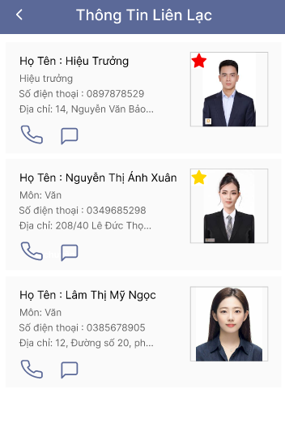 -
8. Hướng dẫn sử dụng chức năng "Tình trạng chuyên cần"
Chức năng Tình trạng chuyên cần cung cấp thông tin điểm danh của con tại trường, giúp phụ huynh có thể theo dõi lịch trình, tình trạng sức khỏe của con để nhận được hỗ trợ kịp thời
Truy cập vào trang chủ nhấn chọn chức năng "Tình trạng chuyên cần"
Trong trường họp phụ huynh có từ hai con trở lên học cùng trường thì trước khi xem tình trạng chuyên cần có thêm một bước chọn đứa con muốn xem
Màn hình hiển thị thông tin điểm danh của học sinh đã chọn
-
9. Hướng dẫn sử dụng chức năng "Kết quả học tập"
Chức năng Kết quả học tập cung cấp thông tin kết quả học tập của con tại trường, giúp phụ huynh có thể theo dõi tình hình học tập của con để nhận được hỗ trợ kịp thời
Truy cập vào trang chủ nhấn chọn chức năng "Kết quả học tập"
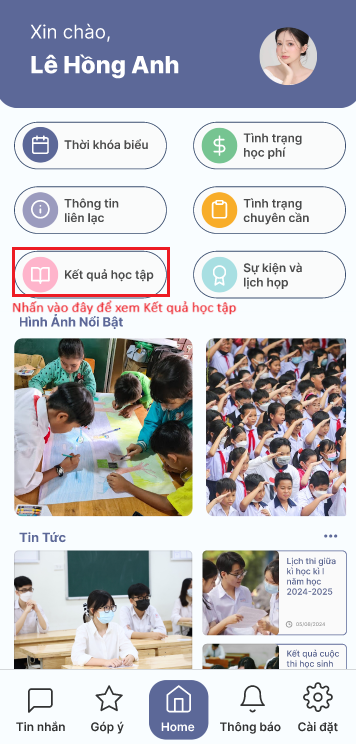Trong trường họp phụ huynh có từ hai con trở lên học cùng trường thì trước khi xem Kết quả học tập có thêm một bước chọn đứa con muốn xem
Màn hình hiển thị thông tin kết quả học tập của học sinh đã chọn
Khi nhấn vào điểm số from chi tiết điểm số và bài kiểm tra sẽ hiện ra
-
10. Hướng dẫn sử dụng chức năng "Sự kiện và lịch họp"
Chức năng Sự kiện và lịch họp cung cấp thông tin về các hoạt động tại trường và lịch họp phụ huynh, giúp phụ huynh có thể theo dõi thông tin lịch họp phụ huynh và đăng ký các hoạt động tại trường cho con
Truy cập vào trang chủ nhấn chọn chức năng "Sự kiện và lịch họp". Trong đó sẽ có Lịch họp phụ huynh và Hoạt động ngoại khóa
Trong trường họp phụ huynh có từ hai con trở lên học cùng trường thì trước khi xem Lịch họp phụ huynh hoặc Hoạt động ngoại khóa có thêm một bước chọn đứa con muốn xem
Trong Lịch họp phụ huynh, màn hình hiển thị thông tin lịch họp phụ huynh tại trường, phụ huynh có thể xem và sắp xếp thời gian để tham dự đúng giờ
Trong Hoạt động ngoại khóa, màn hình hiển thị Hoạt động chung và Hoạt động đã đăng ký
Trong Hoạt động chung là danh sách các hoạt động của trường, của lớp, phụ huynh có thể đăng ký cho con tham gia.
Trong Hoạt đã đăng ký là danh sách các hoạt động của trường, của lớp, mà phụ huynh đã đăng ký cho con tham gia. -
11. Hướng dẫn sử dụng chức năng "Tin nhắn"
Chức năng Nhắn tin cho phép Phụ huynh có thể liên lạc riêng với cán bộ nhà trường, giáo viên, có thể gọi điện và nhắn tin
Chọn chức năng "Tin nhắn" trong trang chủ
Nhấn chọn vào giao diện đoạn tin nhắn để đi đến phần nhắn tin

Tại đây Phụ huynh có thể trò chuyện, gọi thường(nhấn vào biểu tượng cuộc gọi), hoặc gọi video và gửi file ảnh cho người đang chat
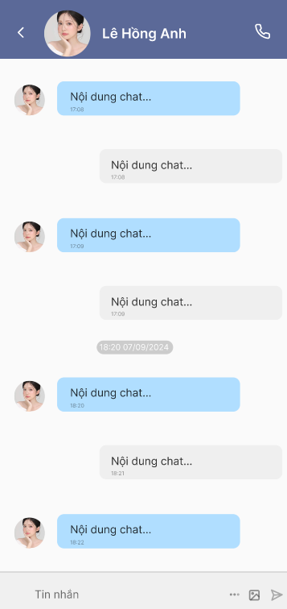Giao diện gọi điện
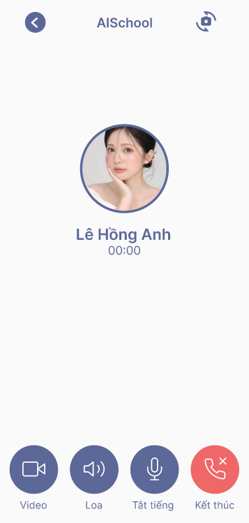Chuyển sang video bằng cách nhấn vào biểu tượng video trong phần gọi điện

Nhấn chọn vào Nhóm chat để đi đến phần nhắn tin theo nhóm, tại đây có nhóm chung cho lớp, nhóm cho bộ môn,...

Tại đây Phụ huynh có thể trò chuyện, gọi thường(nhấn vào biểu tượng cuộc gọi), hoặc gọi video và gửi file ảnh cho nhiều người đang có trong nhóm
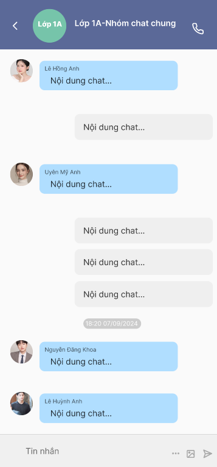Giao diện gọi điện nhóm
-
12. Hướng dẫn sử dụng chức năng "Góp ý"
Chức năng Góp ý cho phép Phụ huynh có thể đóng góp ý kiến cho nhà trường
Chọn chức năng "Góp ý" trong trang chủ.
Trong đó sẽ có hai phần: Đã tiếp nhận và Thêm ý kiến
Trong Đã tiếp nhận, màn hình hiển thị thông tin các ý kiến đóng góp của phụ huynh đã gửi cho nhà trường kèm trạng thái đã ghi nhận hoặc đã gửi
Trong Thêm ý kiến phụ huynh có thể gửi ý kiến đóng góp của mình đến nhà trường
-
13. Hướng dẫn sử dụng chức năng "Thông báo"
Chức năng xem thông báo giúp Phụ huynh cập nhật nhanh chóng các thông tin quan trọng từ nhà trường .
Tại giao diện trang chủ Chọn chức năng "Thông báo" .
Trong mục Thông báo, Phụ huynh sẽ thấy danh sách các thông báo mới nhất.

Nhấp vào từng thông báo để xem chi tiết.

-
14. Hướng dẫn sử dụng chức năng "Cài đặt"
Chức năng Cài đặt giúp phụ huynh tùy chỉnh và quản lý tài khoản của mình một cách hiệu quả, đồng thời giúp phụ huynh cập nhật nhật thông tin của con, liên hệ với nhà phát triển và nhận được các trợ giúp kịp thời trong quá trình sử dụng ứng dụng.
Tại giao diện trang chủ chọn chức năng "Cài đặt", trong đó có các chức năng như: Cài đặt tài khoản, Đặt lại mật khẩu, Quản lý thiết bị, Giao diện và ngôn ngữ, Giới thiệu về ứng dụng, Thông tin liên hệ, Trợ giúp, Đăng xuất.

Chức năng "Cài đặt tài khoản" : Giúp quản lý thông tin tài khoản của Phụ huynh như tên, email, và số điện thoại.
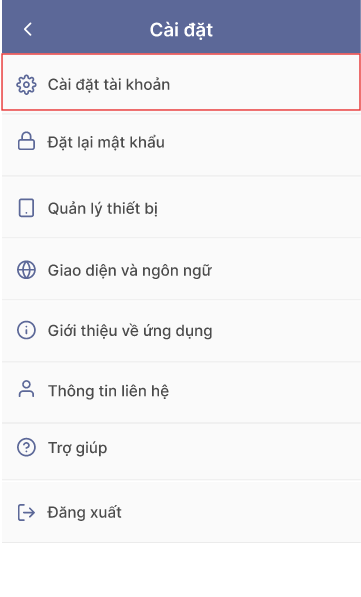
Cách sử dụng: Nhấp vào “Cài đặt tài khoản”, sau đó màn hình sẽ hiển thị thông tin tài khoản của Phụ huynh.Phụ huynh có thể thay đổi một số thông tin bằng cách nhấn vào biểu tượng cây bút để chỉnh sửa các thông tin cần thiết và lưu lại. Phụ huynh có thể thay đổi mộ số thông tin của con bằng cách nhấn vào tên con
Màn hình hiển thị thông tin học sinh, bằng cách nhấn vào biểu tượng cây bút phụ huynh có thể chỉnh sửa các thông tin cần thiết và lưu lại.
Chức năng "Đặt lại mật khẩu" : Giúp thay đổi mật khẩu hiện tại của Phụ huynh nâng cao tính bảo mật của tài khoản.
Cách sử dụng: Nhấp vào “Đặt lại mật khẩu”, màn hình sẽ hiển thị các ô input để nhập mật khẩu mới
Phụ huynh cần nhập mật khẩu hiện tại, sau đó nhập mật khẩu mới, xác nhận mật khẩu mới và nhấn nút "Cập nhật" để cập nhật lại mật khẩu

Chức năng "Quản lý thiết bị" : Giúp Phụ huynh quản lý các thiết bị đã đăng nhập vào tài khoản của Phụ huynh.
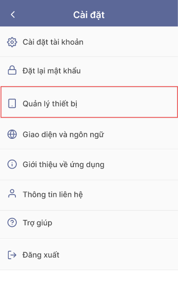
Cách sử dụng: Nhấp vào “Quản lý thiết bị” để xem danh sách các thiết bị và đăng xuất khỏi các thiết bị không sử dụngMàn hình hiển thị danh sách các thiết bị đã đăng nhập, Phụ huynh có thể xem thông tin về thiết bị khi nhấn vào dấu "..."
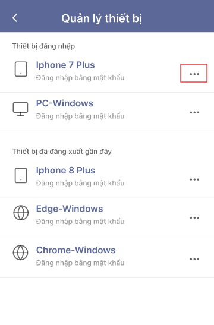Thông tin về thiết bị đã đăng nhập
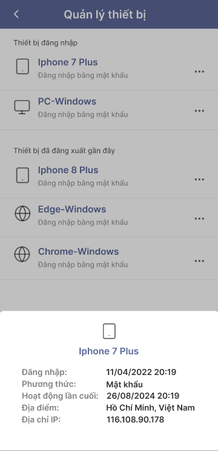Chức năng "Giao diện và ngôn ngữ" : Giúp thay đổi giao diện và ngôn ngữ của ứng dụng.
Cách sử dụng: Nhấp vào “Giao diện và ngôn ngữ” .
Chọn giao diện và ngôn ngữ mong muốn, sau đó lưu lại.
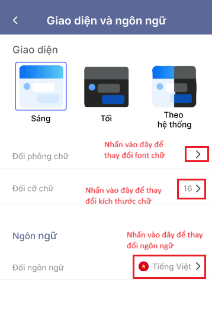Chức năng "Giới thiệu về ứng dụng" : Giúp Phụ huynh xem thông tin về phiên bản và nhà phát triển của ứng dụng
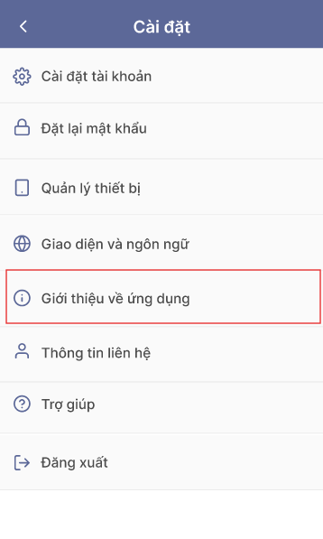
Cách sử dụng: Nhấp vào “Giới thiệu về ứng dụng” để xem các thông tin chi tiết.Tại đây Phụ huynh cũng có thể cập nhật phiên bản mới nhất của ứng dụng nhi bấm vào nút "Cập nhật"

Chức năng "Thông tin liên hệ" : Cung cấp thông tin của nhà phát triển và thông tin liên hệ của trường học
Cách sử dụng: Nhấp vào "Thông tin liên hệ" để xem các thông tin cần thiết
Thông tin của nhà phát triển

Thông tin của trường

Chức năng "Trợ giúp" : Giúp Phụ huynh có thể truy cập vào các tài liệu hướng dẫn và hỗ trợ.
Cách sử dụng: Nhấp vào “Trợ giúp” để xem các tài liệu và liên hệ hỗ trợ nếu cần.
Trong chức năng "Trợ giúp có đường link hướng dẫn sử dụng chi tiết mà Phụ huynh có thể tham khảo"
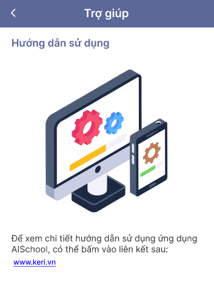Chức năng "Đăng xuất" : Giúp Phụ huynh đăng xuất tài khoản khỏi ứng dụng.
Cách sử dụng: Nhấp vào “Đăng xuất” để thoát khỏi ứng dụng.
VI. Kết luận
AISCHOOL là giải pháp toàn diện cho việc quản lý trường học, mang lại sự tiện lợi và hiệu quả cho cả giáo viên, học sinh và nhà quản lý. Với các tính năng tiên tiến như quản lý thông tin học sinh, theo dõi tiến độ học tập, quản lý thời khóa biểu và nhiều hơn nữa, AISCHOOL giúp tối ưu hóa quy trình quản lý và nâng cao chất lượng giáo dục. Ứng dụng không chỉ giúp giảm bớt gánh nặng công việc hành chính mà còn tạo điều kiện thuận lợi cho việc ra quyết định dựa trên dữ liệu. Với giao diện thân thiện và dễ sử dụng, AISCHOOL là công cụ không thể thiếu cho mọi trường học hiện đại. Hãy trải nghiệm AISCHOOL ngay hôm nay để thấy sự khác biệt và cùng chúng tôi xây dựng một môi trường giáo dục thông minh và hiệu quả hơn.